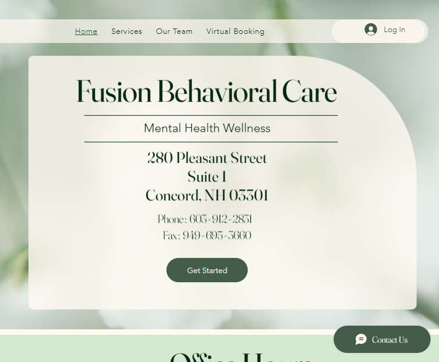

Fusion Behavioral Care
Wix • 2024
Overview
Fusion Behavioral Care is a mental health practice serving patients across New Hampshire.
My goal was to design a patient-first website that emphasized clarity, accessibility,
and secure communication without compromising UX or unintentionally handling protected health information.
Because Wix does not provide native HIPAA compliance, I designed workflows that safely redirect sensitive interactions
through approved Microsoft platforms (Forms and internal messaging hubs) while keeping the public-facing site clean,
navigable, and informational-only.
My Role
- Designed and structured page flows using Wix Editor with clarity-driven navigation and mobile-first layout
- Created a secure messaging system using Microsoft Forms, embedded only in member-restricted pages
- Built a protected membership system — only approved patients can register, access secure pages, or submit forms
- Configured form routing to direct submissions directly into internal messaging workflows (without storing data on the website)
- Created branded business cards and QR-enabled print assets that link back to secure sections of the website
- Wrote the official Privacy Policy and Accessibility Statement for transparency and compliance
- Designed visual identity assets in Canva, including logo usage, color cohesion, and QR-integrated print collateral
- Added a member-only “Report an Issue” ticket page for ongoing site maintenance input from approved patients
- Configured and designed the Wix mobile app experience for the practice, adapting content, layout, and role-based access for patients and staff on mobile devices
Highlights
- Clear “top three” navigation actions: Call • Directions • Patient Portal to support real patient needs
- Brand-aligned design using calming blue and neutral tones, reflecting trust and professionalism
- Visibility improvements via structured page titles, semantic headings, alt-text, and metadata
- Designed Canva-based branded logo, business cards, and QR codes for physical/digital continuity
- Restricted member system ensures protected content only seen by approved patients and staff
Security & Access Control
Since Wix is not a HIPAA-compliant data storage platform, I built a secure workaround:
- Created Microsoft Form workflows routed directly to the internal message hub (Shielding PHI from website storage)
- Restricted membership — only vetted patients are granted access to pages with secure submission options
- Designed forms that allow patients to initiate contact safely without transmitting protected details
- Added a secure ticket submission page (Report an Issue) — for approved site users only
What This Project Demonstrates
- Understanding of UX design principles in healthcare and mental health settings
- Ability to creatively implement HIPAA-aware web workflows using Microsoft and Wix capabilities
- Experience creating secure form logic, controlled membership access, and compliance documentation
- Skill in brand identity design across web, print, and mobile mediums
- Understanding of cross-platform user experience — designed both web and mobile app interfaces using the same brand system